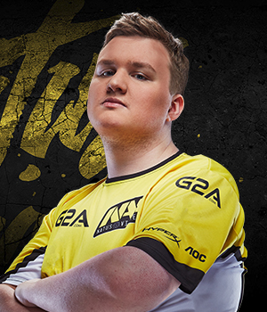

Возраст: 19Егор является самым молодым игроком команды. Несмотря на это, в свои 18 лет он уже успел поиграть во многих известных в СНГ коллективах. Последовательно, но стремительно «flamie» поднимался по карьерной лестнице. Выступал под флагами таких команд, как USSR, dAT Team и HellRaisers, с которыми хоть и не смог выиграть что-либо значимое, но определённо «засветился» и проявил свои лучшие качества. Первыми серьёзными турнирами для Егора стали ESL One Cologne 2014 (в составе dAT Team) и ESL One Katowice 2015 (в команде HellRaisers).
К Рождённым Побеждать «flamie» примкнул в марте 2015 года, придя на смену Сергею «starix» Ищуку, который впоследствии стал менеджером и тренером команды. Изначально Егору предстояло пройти испытательный срок, который совпал с финалами SLTV XII. В игре против датчан из TSM «flamie» сделал более 40 фрагов на de_dust2, что помогло команде выиграть карту, сравнять счёт и в итоге победить датчан, выбив их в сетку лузеров. Отлично справившись с «тестом», Егор стал полноценным членом коллектива. Самый молодой в коллективе.
В первую очередь «flamie» должен был усилить боевую мощь команды благодаря своему индивидуальному мастерству, стрельбе в частности, что ему в полной мере удалось реализовать. Сегодня мы можем наблюдать, как Егор вызывает страх не у одного десятка команд и игроков, заставляя их прятаться и избегать прямых перестрелок в бою.
SSD: HyperX Savage SSD 240 GB
Память: HyperX Savage DDR4 GB
USB: HyperX FURY64 GB
Монитор: AOC g2460Pqu